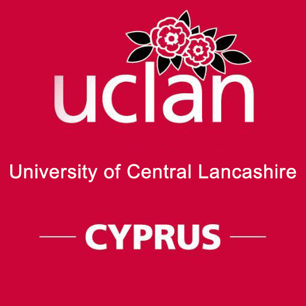

{kind=link}
{kind=link}
{kind=link}
{kind=link}



Το UCLan Cyprus λειτουργεί κάτω από την ακαδημαϊκή ομπρέλα του UCLan Ηνωμένου Βασιλείου, αλλά ταυτόχρονα ελέγχεται ακαδημαϊκά και λειτουργικά από την Επιτροπή Αξιολόγησης Ιδιωτικών Πανεπιστημίων και το Υπουργείο Παιδείας και Πολιτισμού της Κυπριακής Δημοκρατίας.
Αποτελεί ένα έργο μεγάλης χρηματικής επένδυσης, με στόχο τη διασφάλιση υψηλών προδιαγραφών ποιότητας στην εκπαίδευση, με ολοκαίνουριες κτηριακές εγκαταστάσεις. Είναι αξιοσημείωτο ότι το Πανεπιστήμιο διαθέτει: Δύο υπερσύγχρονα αμφιθέατρα χωρητικότητας 300 και 100 ατόμων αντιστοίχως, 30 αίθουσες διδασκαλίας, εξειδικευμένα εργαστήρια, το μοναδικό εικονικό δικαστήριο της Κύπρου, γυμναστήριο, υπερσύγχρονο εργαστήριο Εργοφυσιολογίας, μοντέρνα βιβλιοθήκη, καθώς και ειδικά διαμορφωμένους εξωτερικούς χώρους. Οι υψηλές προδιαγραφές που τέθηκαν επέβαλαν τη λειτουργία μίας υπερσύγχρονης πανεπιστημιούπολης με τεχνολογία αιχμής. Ως επιβράβευση της τεράστιας αυτής επένδυσης σε τεχνολογική υποδομή, τον Ιανουάριο του 2013, το UCLan Cyprus θριάμβευσε ανάμεσα σε όλες τις υποψηφιότητες από Ευρώπη, Μέση Ανατολή και Αφρική ως η πανεπιστημιούπολη με την πιο προηγμένη και καινοτόμo οπτικοακουστική τεχνολογία.
Photos